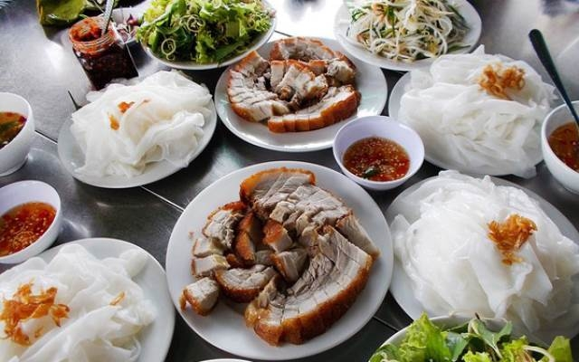
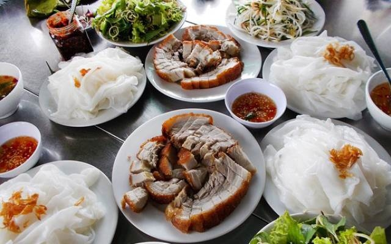

Fresh spring roll is a Vietnamese traditional dish. The Vietnamese food consists of shrimp, pork ,vegetables, herbs, rice vermicelli. All of them are wrapped in a rice paper. Some believe that Vietnamese Fresh rolls originated from China because their shapes are similar to chines spring rolls or chinese biscuit rolls. However, most Vietnamese people believe the origins of Vietnamese fresh rolls are from Vietnam. Vietnamese fresh rolls is one of the most popular appetizers in Vietnamese food culture. The traditional food is ranked at number 30 on the list of 50 most delicious foods in the worlds by CNN Go in 2011. Vietnamese fresh spring roll is often served with a kind of special dipping sauce-fish sauce-and garlic, limes, chili, crushed roasted peanuts. The combination of herbs, pork, shrimp and the salty, hot and sour dipping sauce that make Vietnamese fresh spring roll wonderfully unique.
view

 
